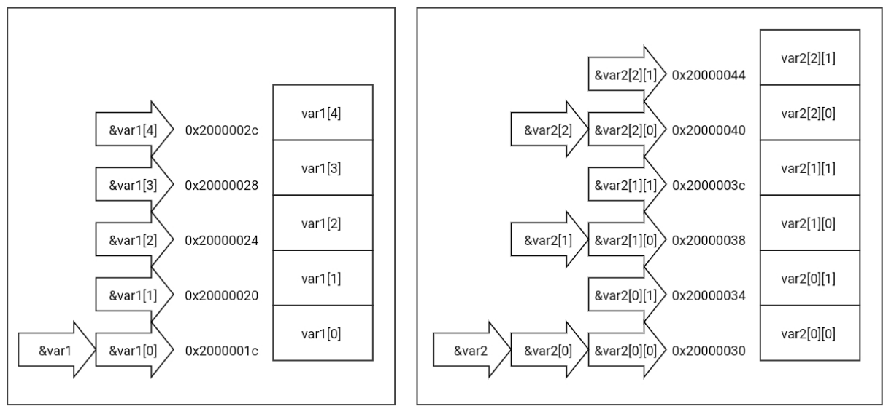

2023-04-24
Es un lenguaje formal que permite codificar procesos de cómputo o algoritmos de manera que puedan ser ejecutados por una computadora.
Sumar un arreglo de enteros con signo de 32 bit usando aritmética con signo de 64 bit.
#include <stdint.h>// int32_t, int64_t
// Definición de función
int64_t sumatoria(int32_t N,const int32_t *b )
{ // Bloque de código o sentencia compuesta
int64_t A=0; // Declaración e inicialización
for (int i=0;i<N;++i) // sentencia de iteración
{ // Bloque
A += b[i]; // asignación compuesta, indexado de arreglo
}
return A;
}// delimitado por corchetes {...}Importante
El lenguaje C distingue mayúsculas y minúsculas.
08000c06 <sumatoria>:
8000c06: 2800 cmp r0, #0
8000c08: dd0c ble.n 8000c24 <sumatoria+0x1e>
8000c0a: 1f0a subs r2, r1, #4
8000c0c: eb02 0c80 add.w ip, r2, r0, lsl #2
8000c10: 2000 movs r0, #0
8000c12: 4601 mov r1, r0
8000c14: f852 3f04 ldr.w r3, [r2, #4]!
8000c18: 1818 adds r0, r3, r0
8000c1a: eb41 71e3 adc.w r1, r1, r3, asr #31
8000c1e: 4562 cmp r2, ip
8000c20: d1f8 bne.n 8000c14 <sumatoria+0xe>
8000c22: 4770 bx lr
8000c24: 2000 movs r0, #0
8000c26: 4601 mov r1, r0
8000c28: 4770 bx lrDe alto nivel : Codifica procesos en forma independiente del hardware donde se ejecutarán
Compilado : El código fuente es traducido a código máquina antes de su ejecución
Imperativo : El programa está escrito en forma de sentencias o instrucciones a ejecutar. Especifica como hacer
Estructurado : La secuencia en que se ejecutan las sentencias es determinada por estructuras de control
Procedimental : Abstracción mediante procedimientos o funciones
Es un procesador de texto automático. Procesa los comentarios y las directivas del preprocesador.
La salida del preprocesador es la entrada del compilador de C propiamente.
Un comentario es todo texto entre /* y */ o entre // y el fin de línea. El preprocesador elimina los comentarios, reemplazándolos por un espacio en blanco.
Las directivas del preprocesador comienzan con un caracter numeral (#), que debe ser el primer caracter de la línea y continúan hasta el final de línea. Pueden prolongarse en varias líneas escapando las nuevas líneas con el caracter barra invertida (\).
Las directivas #include son reemplazadas por el contenido de otro archivo. Luego el procesamiento continúa desde la primera línea insertada.
#include <archivo.h> : inserta el contenido de archivo.h en este punto antes de continuar. Busca archivo.h en los directorios de encabezados de librerías.
#include "archivo.h" : igual que el anterior, pero busca archivo.h también en el directorio actual.
#define MACRO_1 123 : define una macro del preprocesador. En adelante cualquier ocurrencia de MACRO_1 es reemplazada por 123.
#define MACRO_1 (1+44) : si el valor de una macro es una expresión matemática debe ir encerrado en paréntesis.
#if expresión : Incluye un bloque de texto solo si la expresión es verdadera. En la expresión solo pueden particiapr números y macros del preprocesador. El bloque termina con #endif o #else.
#else : Luego de #if, termina el bloque #if e inicia otro que solo se incluye si el bloque #if no fue incluído. El bloque termina con #endif
#ifdef MACRO : Incluye un bloque de texto solo si la macro está definida (independiente de su valor). El bloque termina en #endif o en un bloque #else ... #endif.
#ifndef MACRO : Incluye un bloque de texto solo si la macro no está definida (independiente de su valor). El bloque termina en #endif o en un bloque #else ... #endif.
Suele emplearse como guarda en los archivos de cabecera para evitar copiar varias veces el texto si son incluídos varias veces.
Los archivos de encabezados incluyen definición de macros y declaración de funciones, tipos, y variables.
Las funciones declaradas en un encabezado están definidas en otros archivos fuente o son parte de librerías.
En el archivo fuente se definen las funciones que contienen el código del programa, variables estáticas globales (de enlace externo) y variables estáticas de enlace interno (visibles solo dentro del archivo donde se declaran).
espera.c
#include <stdbool.h> // bool
#include <stdint.h> // uint32_t
#include <stm32f1xx.h> // SysTick_Config, SystemCoreClock, __WFE
#include "espera.h" // este módulo
static bool inicializado = 0;
static volatile uint32_t ticks;
static void inicializa(void){
SysTick_Config(SystemCoreClock/1000);
inicializado = 1;
}
void SysTick_Handler(void){
++ticks;
}
void espera(uint32_t ms){
if (!inicializado) inicializa();
const actual = ticks;
while ((ticks - actual) < ms) __WFE();
}El punto donde inicia la ejecución de nuestro programa se denomina punto de entrada. En C el punto de entrada de nuestro programa es una función llamada main que debe retrornar un valor entero. Si esta función retorna el programa termina. En el software embebido esta función tendrá un lazo infinito, no retornará nunca.
miapp.c
Son uno de los componentes, junto con las declaraciones, de todo programa en lenguaje C. Existen varias clases.
{ }.;. La mayor parte de las sentencias en C son sentencias de expresión. Un punto y coma solo, sin expresión, es una sentencia nula.if, if-else, switchwhile, do-while,forreturn, break, continue, gotoEjemplo
#include <stdio.h>
int main(void)
{ // bloque
int N,D,Q,R; // declaración (no es una sentencia)
puts("Ingrese numerador: "); // sentencia de expresión
scanf("%d",&N);
puts("Ingrese denominador: ");
scanf("%d",&D);
/* Condición. Es un expresión. Si su valor es verdadero
se ejecuta el bloque if, sinó el bloque else.
↓ */
if (D==0) {
puts("División por cero!\n"); // D==0 es verdadero
}
else { // D==0 es falso (D distinto de cero)
Q = N/D; // asignación, cociente
R = N%D; // asignación, módulo
printf("Cociente %d, Resto %d",Q,R); // llamado a función
}
return 0; //Sentencia de salto, retorna con valor 0.
}Selección case
typedef enum {X_NULO,X_ENCENDER,X_APAGAR,X_CONMUTAR} Evento;
typedef enum {E_APAGADO, E_ENCENDIDO} Estado;
Estado transicion(Estado const estado,Evento const evento){
Estado nuevo;
/* Expresión que debe producir un valor entero.
Se evalúa solo una vez. Luego salta a la etiqueta
case cuyo valor coincide con el resultado o a la
etiqueta default si ninguno coincide.
│
↓ */
switch(estado){
case E_APAGADO:
// Sentencia switch anidada
switch(evento){
// Las etiquetas valen solo en el bloque
// donde están definidas. Si no hay una
// sentencia break la ejecución continúa
// en las etiquetas siguientes.
case X_ENCENDER: // estas dos etiquetas corresponden a la misma sentencia.
case X_CONMUTAR: // Una sentencia puede tener varias etiquetas.
nuevo = E_ENCENDIDO;
break; // Sale del switch. SI SE OMITE CONTINÚA EN EL SIGUIENTE case
case X_APAGAR:
default:
nuevo = estado;
}
break;
case E_ENCENDIDO:
switch(evento){
case X_APAGAR:
case X_CONMUTAR:
nuevo = E_APAGADO;
break;
case C_ENCENDER;
default:
nuevo = estado;
}
break;
default:
nuevo = E_APAGADO;
}
return nuevo;
}Switch evalúa la expresión de selección una sola vez, luego salta según su valor. En esos casos es más claro que sentencias if-else anidadas. No olvidar el break al final de cada case.
Iteración for
int producto_punto(int n, int const *v1,int const *v2){
int a = 0;
/* Inicialización. Opcional. Permite declarar variables.
│
│ Condición evaluada antes de cada ejecución
│ del bloque. Si su resultado es verdadero el
│ bloque es ejecutado. Opcional. Si se omite
│ genera un lazo infinito.
│ │
│ │ Expresión de incremento, ejecutada
│ │ luego de cada ejecución del bloque y
│ │ antes de comprobar la condición para la
│ │ siguiente ejecución. Opcional.
↓ ↓ ↓ */
for(int k=0;k<n;++k){ // bloque
a += v1[k]*v2[k];
}
return a;
}Tip
La sentencia for (;;) {...} produce un lazo infinito.
Lazo for destacado en rojo.
rcuad.h
rcuad.c
// Ejemplo iteración while
#include "rcuad.h"
static float error_abs(float ref,float val){
float const err = ref - val;
if (err<0) return -err;
return err;
}
Opt_float raiz_cuadrada(float num){
float tol = num*1e-6, r = 1,err;
if (num < 0) return (Opt_float){false};
if (num == 0) return (Opt_float){true,0};
while(error_abs(num,r*r) > tol){
r = (num/r+r)/2;
}
return (Opt_float){true,r};
}main.c
// Ejemplo de do-while
#include <stdio.h>
#include "rcuad.h"
int main(void){
Opt_float r;
do{
float x;
printf("Ingrese un número no negativo o -1 para terminar: ");
scanf("%f",&x);
r=raiz_cuadrada(x);
if (r.es_float)
printf("La raíz cuadrada de %g es %g.\n",x,r.valor);
}while(r.es_float);
return 0;
}Tip
do-while ejecuta el bloque de código al menos una vez, mientras que while solo lo ejecuta si se cumple la condición.
Una declaración indica la existencia de una variable o función, define su tipo, modo de acceso y (en el caso de variables) puede definir su valor inicial. La declaración de una variable realiza la correspondiente reserva de memoria.
Declaración de variable
Declaraciones múltiples
int A, B = 5, *C = &B;
/*─── ─ ─ ─── ── ────
* ↑ ↑ ↑ ↑ ↑ ↑
* │ │ │ │ │ └──── Inicializador ⎫ Lista
* │ │ │ │ └ Declarador de puntero ⎪ de
* │ │ │ └───────────── Inicializador ⎬ declaradores
* │ │ └─────── Declarador de variable ⎪ e
* │ └────────── Declarador de variable ⎭ inicializadores
* └───────────────────────────────── Especificador de tipo
*
* Una declaración fuera de una función tiene
* por defecto la clase de almacenamiento
* extern
*/declaración de función que retorna puntero
Un microcontrolador posee al menos memoria de programa no volátil (usualmente flash) y memoria de datos volátil (usualmente sram). La memoria de programa contiene al programa y las constantes. La memoria de datos contiene las variables. Nota: Para usar una variable en un cómputo (parte de) su valor debe copiarse a los registros del procesador.
En C las variables pueden tener distintas clases de almacenamiento según la forma en que se reserva memoria para las mismas. Las clases de almacenamiento más relevantes son estático y automático.
Almacenamiento estático : La memoria es reservada en tiempo de compilación (antes de ejecutar el programa) en las secciones .data (inicializadas a algún valor) y .bss (inicializadas a cero).
staticAlmacenamiento automático : La memoria es reservada en la pila de llamados al activarse una función y liberada al retornar.
Variables declaradas dentro de una función sin especificador o con especificador auto (en desuso, al igual que register)
Los parámetros de una función son variables con esta clase de almacenamiento
Almacenamiento en registro : En lo posible la variable se mantendrá en un registro del procesador. No puede obtenerse su dirección (se supone que no está en memoria).
registerAdvertencia
Esta clase es obsoleta. El compilador hace la optimización en forma automática cuando es oportuno con una variable auto. No usar.
La definición de tipo es considerada una clase de almacenamiento, pero no reserva memoria para una variable sino que convierte el identificador en un nombre abreviado para el tipo de datos especificado. Se indica con typedef
Las variables son símbolos asociados a espacios de memoria que almacenan datos. La vinculación o enlace determina el ámbito desde el es accesibles una variable declarada fuera de una función.
Sín vinculación : variables declaradas dentro de una función (estáticas o automáticas) y parámetros, solo pueden ser accedidas dentro del bloque de código donde fueron declaradas.
Vinculación interna : variables static declaradas fuera de una función. Solo son accesibles desde el código de la unidad de traducción (archivo .c y encabezados incluidos) donde fueron declaradas, a partir del primer punto en que fueron declaradas.
Vinculación externa : variables extern (o sin especificador) declaradas dentro (no recomendable) o fuera de una función. Son accesibles desde cualquier unidad de traducción (archivo .c) y desde el código externo si se trata de una librería.
ejemplo.h
ejemplo.c
Indican al compilador como se debe utilizar una variable. Los calificadores son const, volatile y restrict.
Nota
Desde C11 existe el calificador _Atomic, que garantiza que las operaciones de incremento (++), decremento (--) y asignación compuesta (+=, -=, |=, &=, etc.) se ejecutan sin interrupción en casos donde varios procesos pueden acceder concurrentemente a memoria. Todo esto implica también que los accesos se suponen con efecto secundario, de la misma forma que volatile.
Calificador const : Indica que la variable es de solo lectura. Debe asignarsele un valor al declararla (excepto variables extern, que solo en una de sus declaraciones puede tener asignado un valor). Si califica el tipo apuntado por un puntero indica que ese puntero puede ser usado solo para leer pero no para modificar memoria.
Calificador volatile : Inidica que el contenido de la variable puede tener un efecto secundario sobre el hardware o bien ser afectado por el hardware en forma independiente al flujo normal del programa. Debe ser usado si una variable es accedida desde una rutina de servicio de interrupción.
En C cada variable tiene asociado un tipo de dato, que determina la cantidad de memoria que requiere y la interpretación hace el compilador sobre el contenido de esa memoria. C tiene tipos básicos y derivados.
Los tipos básicos en C son void, tipos aritméticos, tipos definidos por el usuario con typedef, estructuras, uniones y enumeraciones.
Los tipos derivados son arreglos, funciones, punteros y (desde C11) tipos atómicos.
void : El tipo void es un tipo especial que indica que no hay un valor.
void.void significa que no retorna ningún valor.(void) indica que la función no toma ningún parámetro.void es un puntero universal, debe convertirse a otro tipo de puntero para usarse y puede asignársele la dirección de cualquier puntero excepto un puntero a función.ejemplo
/* Una rutina de servicio de interrupción
* es llamada por hardware. No puede recibir
* parámetros ni retornar valor (pues no hay
* quien lo reciba).
*/
void SysTick_Handler(void){...}
/* ↑ ↑
* │ └ No acepta argumentos
* └───────────────────────── No retorna valor
*/
/* Función de librería estándar que reserva
* memoria en forma dinámica en el Heap.
* Retorna un puntero sin tipo, que indica
* una dirección de memoria sobre cuyo contenido
* no se tiene ninguna información.
*/
void * malloc(size_t size);Tipos aritméticos : indican que una variable contiene un valor numérico.
Tipos enteros
// Tipo lógico. Solo toma valores 0 (falso) y 1(verdadero). En ARM 8 bits
_Bool flag=1;
// Tipos de caracter. Enteros de al menos 8 bits. En ARM 8 bits
char caracter='A'; // usado para representar caracteres.
signed char x=123; // con signo
unsigned char y=0b11011001; // sin signo
// Enteros cortos, al menos 16 bits. En ARM 16 bits
signed short int A=23; // Sinónimos: signed short, short, short int
unsigned short int B=52300U; // sin signo. Sinónimo: unsigned short
// Enteros. Al menos 16 bits. En ARM 32 bits
signed int C=-19384; // Sinónimos: int, signed
unsigned int D=0x1234U; // sin signo. Sinónimo: unsigned
// Enteros largos. Al menos 32 bits. En ARM 32 bits
signed long int E=1293L; // Sinónimos: long int, signed long, long
unsigned long int F=998310LU; // sin signo. Sinónimo: unsigned long
// Enteros extendidos. Al menos 64 bits. En ARM 64 bits
signed long long int G=234102391304LL; // signed long long, long long
unsigned long long int H=0x0123456789ABCDEFLLU; // unsigned long longTip
El compilador de C acepta las siguientes constantes numéricas enteras:
0b. Ej. 0b1110100110723.467.0x. Ej. 0x1d3 o 0x1D3.Tip
Para indicar el tipo del entero se usan sufijos, que pueden ubicarse en cualquier orden.
int (entero con signo de al menos 16 bit, en ARM 32 bit).U o u indica unsigned (entero sin signo).L o l indica long (al menos 32 bit). Usar siempre L para evitar confusión con el número uno 1.LL o ll indica long long (al menos 64 bit). Usar siempre LL para evitar confusión con el número uno 1.Tipos de punto flotante
// El soporte por hardware está en la unidad de punto flotante (FPU), no en el CPU
// Cortex-M3 no inclue FPU, Cortex-M4 Sí
// Emulados por software, computacionalmente costoso
float a = 1.45e-45; // Punto flotante de 32 bit
double b = 1.4535e-500; // Punto flotante de 64 bit
long double c = 1.234204221;Importante
Si es necesario usar punto flotante y se requiere procesamiento rápido y/o bajo consumo, uno de los requerimientos a la hora de elegir un microcontrolador es que cuente con unidad de punto flotante (FPU).
Si el rendimiento no es importante muchas veces es suficiente con el punto flotante emulado.
Las enumeraciones son tipos que pueden tomar un valor entre un conjunto discreto de valores asociados a nombres. Los nombres operan como constantes enteras válidas en el ámbito donde es visible el tipo. El tamaño en memoria de una variable de tipo enum depende de la implementación y del tamaño de las constantes numéricas. Los valores de las constantes de una enumeración son enteros y pueden asignarse también a variables enteras.
Ejemplo
// Si no se dan valores explícitamente
// el primer elemento será cero y subsiguientes
// elementos toman el valor siguiente del elemento
// anterior
typedef enum {
FUERA_DE_SERVICIO, // FUERA_DE_SERVICIO vale 0
VERDE = 10, // VERDE vale 10
AMARILLO, // AMARILLO vale 11
ROJO, // ROJO vale 12
}EstadoSemaforo;Tip
Al definir una enumeración se crean constantes enteras para sus valores. Estas constantes son símbolos del compilador, no macros. Valen solo en el ámbito dentro del cual se definió la enumeración y pueden incorporarse en la información de depuración.
Un tipo estructura es una concatenacion de uno o mas tipos de datos. Son conjunciones de tipos, es decir
struct{int a,char b,int c} mivar;
reserva memoria para a y b y c. Además reservará memoria para mantener la alineación en memoria de modo que c comienze en dirección par.
Ejemplo
/* ┌──── Palabra clave, indica que es un tipo estructura
│ ┌ Etiqueta que se refiere a esta definición
│ │ ┌──── Definición de struct Estructura
↓ ↓ ↓ */
struct Estructura {
int miembro_1;
// Definición de estructura anónima (sin etiqueta)
struct {
long parte_1;
long parte_2;
}miembro_2;
// Los miembros pueden ser arreglos
char miembro_3[20];
// Los miembros pueden ser punteros
unsigned long *miembro_4;
} var1, *var2;Ejemplo (continuación)
// Define un tipo Estructura
typedef struct Estructura Estructura;
// Tipo Estructura
Estructura var3;
// Equivalente
struct Estructura var4;
int main(void){
var2 = &var1;
// Acceso a miembros de estructura
var1.miembro_1 = 5;
var1.miembro_2.parte_1 = 4;
// Acceso a miembros desde puntero a estructura
var2->miembro_2.parte_2 = 3;
var2->miembro_3[5]=4;
// Forma equivalente (pero no usada). LOS PARÉNTESIS SON NECESARIOS
(*var2).miembro_3[6]=5;
return 0;
}Estructuras como valores
typedef struct Punto{
int x,y;
} Punto;
Punto Punto_suma(Punto a,Punto b){
// a y b son copias (pasaje por valor)
// Literal compuesto de tipo estructura
return (Punto){.x = a.x + b.x,
.y = a.y + b.y};
}
int main(void){
// inicialización
Punto a={1,4},c={0}; // con lista
Punto b={.y=7}; // con designación
// Miembros omitidos son inicializados a 0
c = Punto_suma(a,b); // no altera a y b
return 0;
}Uso de punteros a estructura
typedef struct MiEstado{
uint32_t R[16], xpsr;
} MiEstado; // Ocupa 68 bytes
void muestraEstado_copia(MiEstado e){
// Cada vez que se llama a esta función
// se copian los 68 bytes!
...
}
void muestraEstado_ptr(MiEstado *e){
// Esta función tiene acceso de escritura
// al estado, es INSEGURO!
...
}
void muestraEstado_cptr(const MiEstado *e){
// Es la mejor manera. Omite copiar el estado
// pero lo proteje contra cambios imprevistos
...
}Un tipo union es un tipo que puede contener valores de otros tipos, pero solo un valor por vez. Son disyunciones de tipos, es decir
union {int a,char b,long long c} mivar;
reserva memoria para el más grande entre a,b y c. Puede contener a o b o c, pero solo uno por vez. Al usar uniones lo mejor es ubicarlas dentro de estructuras donde otro miembro determine cual de los valores es contenido.
Ejempo (2/2)
Var recibe_elemento(void){
Var r;
recibe_bytes(sizeof(r.tipo),&r.tipo);
switch(r.tipo){
case ERROR:
recibe_bytes(sizeof(r.error),&r.error);
break;case NUM_16:
recibe_bytes(2,&r.v16);
break;case NUM_32:
recibe_bytes(4,&r.v32);
break;case NUM_64:
recibe_bytes(8,&r.v64);
break;default:
r.tipo = ERROR;
r.error = MENSAJE_NO_VALIDO;
}
return r;
}Las funciones son los objetos que contienen el código ejecutable del programa. Su tipo define la interfaz entre el código que contienen y el resto del programa. Cuando se declara una función esto no reserva memoria alguna, sino que indica al compilador que existe una definición de función con el mismo nombre que contiene código ejecutable, e indica como interactuar con ese código.
Nota
En el caso de las funciones inline, la definición toma el lugar de la declaración y hay una declaración en el punto donde sería la definición.
Para hacer uso de una función se emplea una expresión de llamado a función. Dicha expresión consiste en el identificador (nombre) seguido de la lista de parámetros entre paréntesis. Los paréntesis indican que es un llamado a función. En caso de que la función no acepte parámetros debe usarse una lista vacía “()”.
Ejemplo
#include <stdio.h> // puts, fputs, stderr, EOF
#include <stdlib.h> // exit
static void decir_hola(void){
// Llamado a puts, acepta un parámetro y retorna un valor entero
const int resultado = puts("Hola Mundo!\n");
if (resultado == EOF){
// El valor retornado por fputs es ignorado.
fputs("Error al escribir en STDOUT\n",stderr);
exit(1);
}
}
int main(void)
{
// decir_hola no acepta parámetros ni retorna valor. Los paréntesis
// vacíos indican que es un llamado a función y son necesarios.
decir_hola();
}El tipo función es una clase de tipo derivado, donde el tipo base identifica el tipo retornado por la función, y además se especifican otros tipos que corresponden a los argumentos de la función. Un declarador de función se construye ubicando una lista de argumentos entre paréntesis a la derecha del identificador. Si una función no retorna valor su tipo base debe ser void. Y si no acepta argumentos la lista de argumentos debe contener solo uno, de tipo void.
Nota
En este curso trataremos la declaración de funciones moderna, correspondiente a C99 y posterior. La forma histórica sigue siendo soportada pero no es recomendable.
Ejemplo
int f1(void), f2(int,int);
/*─── ──────── ───────────
* ↑ ↑ ↑
* │ │ └ Declarador de función que
* │ │ acepta dos argumentos enteros
* │ │ y retorna un valor entero
* │ │
* │ └──── Declarador de función que no acepta
* │ argumentos y retorna un valor entero
* │
* └───── Tipo base entero, determina el tipo de
* valor retornado.
*/Nota
Si bien este ejemplo declara dos funciones en con el mismo especificador de tipo base, es conveniente por claridad declarar cada función por separado.
Ejemplo
typedef struct Opc_ResultadoDiv{
bool es_resultado;
int cociente;
int resto;
} Opc_ResultadoDiv;
Opc_ResultadoDiv dividir(int numerador,int denominador);
/*
* Declaración de una función dividir que acepta dos
* argumentos enteros y retorna un valor tipo estructura
* El nombre dado a los argumentos es opcional, pero
* recomendable por claridad
*/Nota
El tipo Opc_ResultadoDiv comienza su nombre por Opc_ por opcional. En caso de que es_resultado sea falso significa que ocurrió un problema (divisor cero) y no fue posible determinar el resultado. Este clase de tipo de estructura Op_… es práctico en casos donde puedan ocurrir errores.
Si el tipo de una declaración de función tiene el especificador static, se está declarando una función visible solo dentro de la unidad de traducción (archivo .c y encabezados) actual. En ese caso la función debe ser definida en la misma unidad de traducción donde fue declarada.
Ejemplo
Precaución
Es un error si termina el archivo sin definir func1.
En C99 se introdujo un especificador inline que indica que el código de la función puede ser “pegado” dentro de otra función en lugar de hacer un llamado. Esto permite evitar la sobrecarga de llamar a una función sencilla.
Tip
El compilador de C solo hace la inclusión en línea del código si está activada la optimización. Si no está activada la optimización el compilador realizará un llamado normal en su lugar.
Importante
Las funciones inline invierten las posiciones de la declaración y la implementación. Son implementadas en el encabezado y declaradas en un archivo .c. En el archivo donde son declaradas se genera el código accesible de forma normal (cuando no es insertada en línea).
inline.extern inline. Esta declaración es especial, indica que en este punto debe compilarse la función de manera normal. Esto es necesario para el uso normal de la función, si se omitiera fallaría el linker si se compila sin optimizar o se llama la función desde un puntero.ejemplo.h
Un arreglo es un tipo de datos compuesto que contiene varias instancias del tipo de dato base dispuestas en forma contigua en memoria. El declarador de arreglo es indicado por un par de corchetes a la derecha del resto del declarador. Dentro de los corchetes se indica el número de elementos del arreglo. Un arreglo reserva memoria para todos sus elementos.
Disposición en memoria arreglos en el ejemplo
Nota: &x produce la dirección de x y &x[1] equivale a &(x[1])
// Las dos declaraciones son equivalentes
// Nota: Hay que especificar la longitud!
uint32_t suma(int n, int numeros[]);
uint32_t suma(int n, int *numeros);
// Arreglos de longitud variable (VLA), solo como parámetros o variables automáticas.
void matmul(int n,int k,int m,
int const A[n][k], int const B[k][m], int R[k][m]);
// Esta forma es equivalente
void matmul(int n, int k, int m,
int const (*A)[k], int const (*B)[m], int (*R)[m])
{
for (int fila=0;fila<n;++fila){
for (int col=0;col<n;++col){
R[fila][col] = 0;
for (i=0;i<k;++i){
R[fila][col] += A[fila][k]*B[k][col];
}
}
}
}Precaución
Los punteros se pueden indexar como si fuesen arreglos, sin embargo no son arreglos.
Si un puntero P apunta a un arreglo A entonces:
Similitudes
P (valor del puntero) es igual a A (dirección del arreglo)
P[n] es equivalente a A[n] (tanto para leer como modificar)
&P[n] es igual a &A[n]
Diferencias
&P es la dirección en memoria del puntero (&P != A).
&A es la dirección en memoria del arreglo (&A == &A).
sizeof P (tamaño en memoria de P) siempre es el tamaño de un puntero.
sizeof A (tamaño en memoria de A) es el espacio ocupado por A en memoria.
A es la dirección del arreglo y por lo tanto no puede modificarse.
P es el valor del puntero y sí puede modificarse.
Punteros no son arreglos
#include <stdio.h> // puts
#include <assert.h> // assert
// assert(x) termina el programa con mensaje de error si x es falso
int main(void)
{
int A[]={1,2,3,4,5,6,7,8,9,10,11,12};
int *B = A;
assert(A == B);
for (int i=0;i<(sizeof A / sizeof A[0]);++i){
assert(A[i] == B[i]);
assert(&A[i] == &B[i]);
}
assert(&A != &B);
assert(sizeof A != sizeof B);
puts("Todas las pruebas pasadas!\n");
return 0;
}Nota
Puedes ejecutar una versión de este ejemplo aquí.
Un puntero es un tipo derivado cuyo valor es una dirección de memoria que, a su vez, contiene un objeto del tipo base. El tipo base puede ser cualquier otro tipo.
Precaución
El tipo puntero se indica con un asterisco a la izquierda del identificador. Debido a la precedencia de operaciones, el asterisco se procesa después que los paréntesis y los corchetes que indican los tipos función y arreglo respectivamente. En estos casos deben usarse paréntesis para forzar que se evalúe primero el indicador de puntero.
Ejemplos
int x=5, *a=&x, **b=&a, ***c=&b;
/* x es una variable entero
* a es una variable puntero a entero
* b es una variable puntero a puntero a entero
* c es una variable puntero a puntero a puntero a entero
*/
int *x[4], (*y)[6];
// x es un arreglo de cuatro punteros a entero.
// y es un puntero a arreglo de cuatro enteros.Tip
Notar en el ejemplo la diferencia entre x e y. La variable x almacena cuatro punteros a entero, mientras que y es un puntero a un arreglo de seis enteros.
x[0] es un puntero a entero.
y[0] es un arreglo de 4 enteros.
La variable x contiene 4 punteros, por tanto su tamaño en memoria es el cuádruple de la variable y.
Para interpretar una declaración compleja comenzar por el identificador (nombre de lo que se está declarando) considerar primero lo que hay a su derecha, luego lo que hay a su izquierda. Cada vez que se resuelva una declaración entre paréntesis considerar nuevamente derecha, luego izquierda.
Al evaluar cada parámetro de una decalración de función se procede de la misma manera.
Identificador: A → A es…
Derecha: (int,int) → …una función con dos parámetros enteros…
Izquierda: * → …que retorna un puntero a…
Izquierda: int const → …entero con signo de solo lectura.
Tip
Los calificadores const y volatile pueden ir a izquierda o derecha de un tipo base.
Pero si califican un puntero deben ir siempre a la derecha del asterisco.
Si siempre se ponen a la derecha de lo que califican es más dificil confundirse.
Identificador: B → B es…
Derecha: (int,int) → …una función con dos argumentos enteros…
Izquierda: * → …que retorna un puntero a…
Fuera de los paréntesis:
Derecha: [9] → …un arreglo de nueve…
Continuando derecha [3] → …arreglos de tres…
Izquierda: int → …enteros con signo.
Identificador: ivecs → ivecs es…
Derecha: [16] → …un arreglo de dieciseis…
Izquieda: * const → …punteros constantes a…
Fuera de los paréntesis:
Derecha: (void) → …funciones que no aceptan argumentos…
Izquieda: void → …y no retornan valor.
Importante
Las variables de solo lectura (de tipo calificado por const) deben ser inicializadas en su definición (declaración que reserva la memoria).
Tip
En “int const *A;” la variable A no es calificada por const, sino la posición de memoria a la que apunta. Por eso no hace falta inicializarla al definir.
Identificador: suma → suma es…
Izquierda: *const → …un puntero constante a…
Fuera de los paréntesis:
Derecha: (Vector const *self,const Vector *otro, Vector *resultado)
→ …función que acepta tres argumentos: dos punteros a constante tipo Vector (self y otro) y un puntero a tipo Vector (resultado); …
Izquierda: void → …y no retorna valor.
Importante
Como suma es un tipo calificado constante, debe ser inicializada al momento de su declaración.
struct Pin_VT{
void (*const modo_salida)(Pin *);
void (*const modo_entrada)(Pin *);
void (*const set_estado)(Pin *,bool);
bool (*const get_estado)(Pin *);
bool (*const get_entrada)(Pin *);
};No hay identificador → No declara ningún objeto, …
Izquierda: struct Pin_VT{...} → …pero define una estructura de etiqueta Pin_VT cuyos miembros son: modo_salida y modo_entrada, dos punteros constantes a función que acepta un argumento puntero a Pin y no retorna valor; set_estado, un puntero constante a función que acepta un argumento puntero a Pin, un argumento tipo bool y no retorna valor; get_estado y get_entrada, dos punteros constantes a función que acepta un argumento puntero a Pin y retorna un valor tipo bool.
typedef enum {
PIN_IN_ANALOGICO = 0b0000,
PIN_IN_FLOTANTE = 0b0100,
PIN_IN_CON_PULL = 0b1000,
PIN_OUT_LENTO = 0b0010,
PIN_OUT_MEDIO = 0b0001,
PIN_OUT_RAPIDO = 0b0011,
PIN_OUT_OD_LENTO = 0b0110,
PIN_OUT_OD_MEDIO = 0b0101,
PIN_OUT_OD_RAPIDO= 0b0111,
PIN_AFO_LENTO = 0b1010,
PIN_AFO_MEDIO = 0b1001,
PIN_AFO_RAPIDO = 0b1011,
PIN_AFO_OD_LENTO = 0b1110,
PIN_AFO_OD_MEDIO = 0b1101,
PIN_AFO_OD_RAPIDO= 0b1111
} ModoEntrada;Identificador ModoEntada → ModoEntrada es…
Izquierda: typedef enum {...} → un tipo definido por el usuario, equivalente a la enumeración anónima especificada (además, se definen las correspondientes constantes).